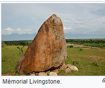

Parc national de la Kibira
Perché sur la crête Congo-Nil avec 40 000 hectares de forêt préservée, ce parc est la plus grande région naturelle encore intacte au Burundi. D’une grande richesse végétale, le parc abrite plusieurs familles de chimpanzés, de babouins, cercopithèques et colobes noirs. Les 180 km de pistes permettent la surveillance motorisée du massif forestier et l’accès facile aux touristes.
À l’intérieur du massif se trouve également une source d’eau thermale. L’accès au parc se fait à travers les immenses plantations de thé de Teza et Rwegura.Le parc national de la Ruvubu,
situé de part et d’autre de la rivière Ruvubu, encadré de hauts massifs montagneux, a été libéré de tous ses habitants et rendu à la vie sauvage. Le réseau de pistes de 100 km environ permet d’atteindre de nombreux observatoires.
Parc national de la Rusizi.

La réserve gérée de la Rusizi est proche de l'ancienne capitale Bujumbura.
Le delta de la Rusizi (sur 500 ha) est constitué d’une végétation de Phragmites mauritanus, il est parcouru par quelques familles d’antilopes et par des hippopotames en quête de pâturage. La palmeraie de la Rusizi, sur la route de Cibitoke, à 10 km de Bujumbura), possède une végétation acclimatée à une faible pluviosité (des épineux et des euphorbes) et de palmiers Hyphane bengalensis var ventricosa. Au sein de la réserve se trouvent des étangs naturels formés par d'anciens méandres de la Rusizi où des centaines d’oiseaux viennent se nourrir de poissons.Réserve naturelle de Bururi
La réserve naturelle de Bururi couvre une superficie de 3 300 ha.
C'est une forêt humide d’altitude, où ont été identifiés 117 espèces d’oiseaux et 25 espèces de mammifères. Située à seulement 33 km de Rumonge par une route allant des bords du lac jusqu'à la réserve.Les réserves naturelles forestières de Rumonge,
Kigwena et Mugara sont en cours d’aménagement pour permettre aux chimpanzés et aux cercopithèques d’y trouver
assez de nourriture pour s'installer et se reproduire. Il existe une chute d’eau thermale, située dans la réserve de Mugara. Les plages du Tanganyika, toutes proches, sont propices à la baignade.Réserve naturelle gérée du lac Rwihinda
La réserve naturelle gérée du lac Rwihinda est un sanctuaire pour les oiseaux aquatiques migrateurs qui viennent s’y reproduire.
Tous les oiseaux désormais protégés grâce à un effort d’aménagement des bords du lac, nichent maintenant de plus en plus nombreux sur les îlot verdoyants et les marécages tout proches. Grâce à des barques mises à la disposition des visiteurs, il est possible d'approcher, sans les effrayer, de la plus grande variété d’oiseaux possible.Faille de Nyakazu et chutes de la Karera
Sur le massif de Nkoma situé dans la province de Rutana au sud-est du Burundi,
se distinguent deux sites naturels : les chutes de Karera et la faille de Nyakazu.La faille de Nyakazu s'ouvre sur la dépression du Kumoso.
C'est une entaille dans le massif de Nkoma qui surplombe la plaine et se prolonge à la frontière avec la Tanzanie.
Cette faille est d'origine tectonique récente et s'étend sur 600 ha. On y trouve des vestiges historiques d'un fort allemand.
On observe également une chute saisonnière d'une hauteur de plus de 100 m qui
se déverse sur une vallée couverte d'une forêt constituée de différentes espèces notamment Entandrophragma excelsum.
Autour de la faille, il existe une forêt claire à Brachystegia.
C'est une zone de conservation des arbres de haute altitude qui jouit d'un microclimat particulier.
Les espèces de faune ne sont pas toutes inventoriées.
Pierre de Stanley-Livingstone
Mémorial Livingstone.
Une pierre fut érigée à une dizaine de kilomètres au sud du site de la future Bujumbura
(qui n'allait naître que quelques décennies plus tard sous le nom de Usumbura)
pour immortaliser la rencontre du 25 novembre 1871 à Mugere, entre le savant Livingstone et
le jeune reporter Stanley, parti à sa recherche.
Lac Tanganyika.
Le lac Tanganyika, ou Tanganika est l'un des Grands Lacs d'Afrique,
deuxième lac africain par la surface après le lac Victoria,
le deuxième au monde par le volume et la profondeur après le lac Baïkal.
Il est le plus poissonneux du monde.
Ses eaux rejoignent le bassin du Congo puis l'océan Atlantique.
On estime que sa formation remonte à environ 20 millions d'années (Miocène).
Son nom, Etanga'ya'nia en bembé (ou kibembe), signifie « lieu de mélange ».
Richard Francis Burton et John Hanning Speke furent les premiers Européens à l'apercevoir et
décidèrent de conserver son nom d'origine, contrairement à l'usage en vigueur à l'époque.
Burton s'attribua seul la paternité de la découverte, ce qui brouilla les deux hommes à vie.
Le lac Tanganyika couvre une superficie de 32 900 km2 (approximativement la même superficie que la Belgique)
et s'étire sur 677 km le long de la frontière de la Tanzanie (à l’est)
et de la République démocratique du Congo (à l'ouest) ;
son extrémité nord sépare ces deux pays du Burundi, son extrémité sud les sépare de la Zambie.
On retrouve à l'ouest (du côté congolais), les monts Mitumba.
Il est situé sur la branche occidentale de la vallée du Grand Rift.
Sa température de surface est de 25 °C en moyenne pour un pH avoisinant 8,4.
La profondeur ainsi que la localisation tropicale du lac empêchent
le renouvellement total des masses d'eau et la plus grande partie des eaux profondes sont des eaux fossiles et anoxiques.
Le lac Tanganyika fait maintenant partie du bassin hydraulique du fleuve Congo.
Il s'y déverse par son émissaire, la Lukuga. Jusqu'en 1878, cette rivière se jetait dans le lac,
mais des mouvements tectoniques, et surtout la montée du niveau de l'eau, en ont inversé le sens vers le Congo.
Le bassin drainant du lac Tanganyika couvre une superficie de 250 000 km2.
Les principales rivières qui l'alimentent sont la Malagarasi, la Rusizi, la Ifume,
la Ruvubu et la Ntahangwa qui y déversent 24 km3 d’eau par an ; les pluies, quant à elles,
en apportent 41 km3 par année. La Malagarazi est plus ancienne que le lac lui-même
et se trouvait auparavant dans le prolongement du Congo.
Source Page 1 Page 2 Page 3 Page 4